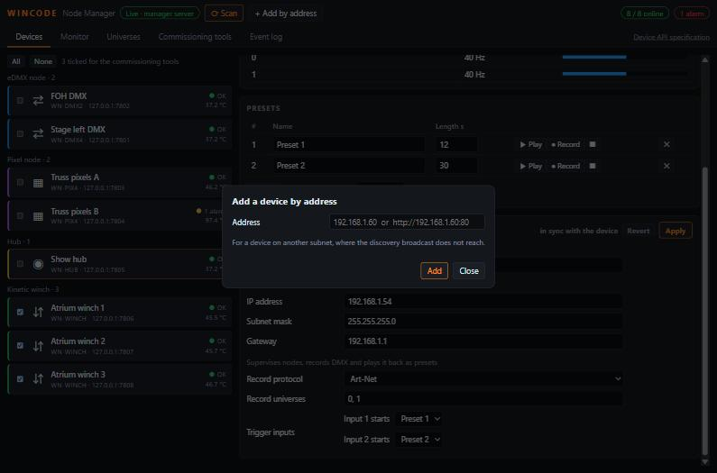
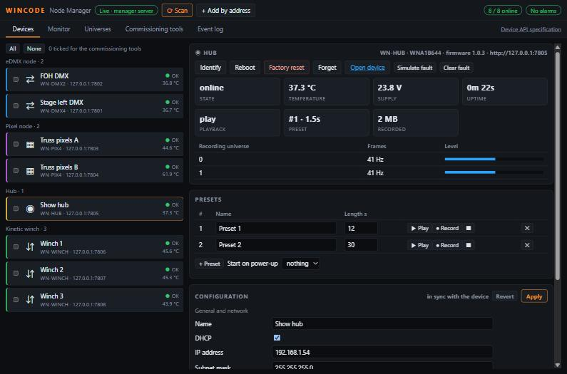
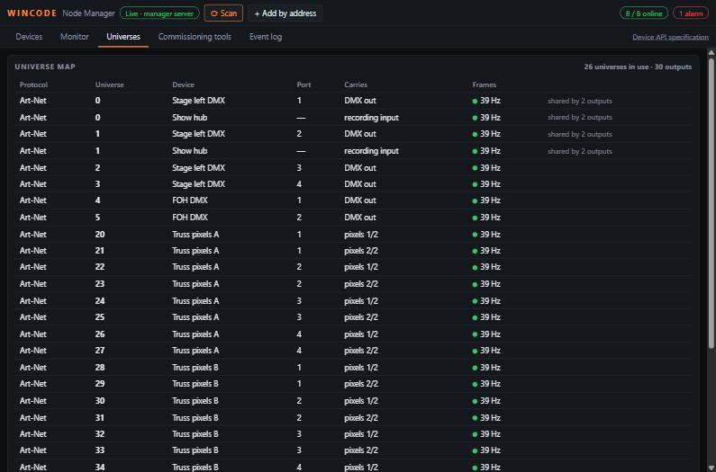
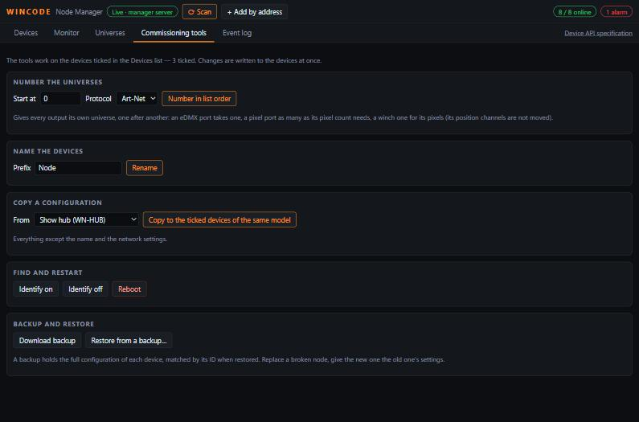
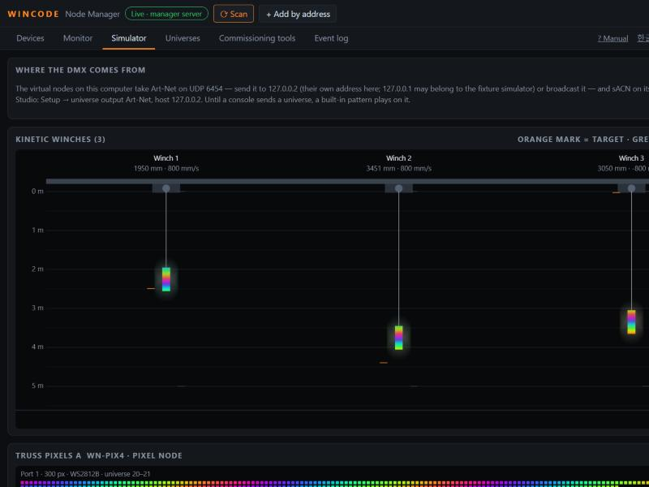
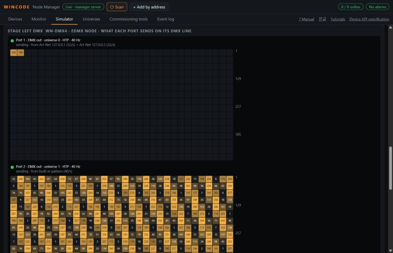

Wincode Node Manager 사용 설명서 · 조명 네트워크 노드의 설정, 커미셔닝, 모니터링
프로그램 화면의 글자는 모두 영어입니다. 이 설명서에서는 버튼과 항목 이름을 화면에 보이는 영어 그대로 적고, 뜻을 한글로 설명합니다.
1. Node Manager란
Node Manager는 공연 전과 공연 중에 조명 콘솔 옆에서 쓰는 도구입니다. 콘솔은 쇼 데이터(Art-Net 또는 sACN)를 보냅니다. Node Manager는 그 데이터를 받는 장치들을 관리합니다. 네트워크에서 장치를 찾고, 설정하고, 리그 전체를 몇 단계로 세팅하고(커미셔닝), 쇼가 도는 동안 장치마다 무슨 일이 일어나는지 보여 줍니다.
관리하는 Wincode 장치는 네 종류입니다.
| 장치 | 모델 | 하는 일 |
|---|---|---|
| eDMX 노드 | WN-DMX2 · WN-DMX4 · WN-DMX8 | Art-Net / sACN을 DMX512 포트로 바꿉니다(반대로 DMX를 네트워크로 보낼 수도 있습니다). |
| 픽셀 노드 | WN-PIX4 · WN-PIX8 | Art-Net / sACN으로 주소 지정형 LED 픽셀(WS2812B, SK6812, APA102 등)을 구동합니다. |
| 허브 | WN-HUB | 들어오는 유니버스를 녹화해 두었다가 콘솔 없이 프리셋으로 재생합니다. |
| 키네틱 윈치 | WN-WINCH | 16비트 DMX 위치값을 따라 움직이는 전동 윈치이며, 픽셀 램프를 달고 있습니다. |

하드웨어는 아직 개발 중입니다. 하드웨어가 나오기 전까지 프로그램은 펌웨어가 동작할 방식 그대로 움직이는 가상 장치와 함께 동작합니다(16장). 이 설명서의 모든 내용은 가상 장치로 해 볼 수 있습니다. 실제 하드웨어로 시험한 내용은 아직 없습니다.
2. 프로그램 시작
직접 해 보며 배우고 싶다면 튜토리얼에서 예제 리그로 여섯 가지 작업을 처음부터 끝까지 따라 할 수 있습니다.
내 컴퓨터에서 (일반적인 방법)
Node.js 18 이상이 필요합니다. 그 밖에 설치할 것은 없습니다.
git clone https://github.com/samcho93/wincodeNodeManager
cd wincodeNodeManager
npm start그다음 Chrome이나 Edge에서 http://127.0.0.1:7760 을 엽니다.
| 명령 | 시작되는 것 | 쓰는 경우 |
|---|---|---|
npm start | 매니저와 가상 장치 8대 | 프로그램 익히기, 개발 |
npm run manager | 매니저만 | 실제 노드로 작업할 때 |
npm run virtual | 가상 장치만 | 다른 도구를 장치 API에 붙여 시험할 때 |
브라우저만으로 (데모)
samcho93.github.io/wincodeNodeManager 페이지는 설치 없이 열립니다. 웹 페이지만으로는 네트워크를 검색할 수 없으므로, 가상 장치 8대를 페이지 안에서 돌립니다. 모든 화면이 동작하지만, 바꾼 내용은 페이지를 새로 고치면 사라집니다.
Live와 Demo 구분
프로그램 이름 옆의 표시가 지금 어느 쪽인지 알려 줍니다.
| 표시 | 뜻 |
|---|---|
| Live · manager server | 페이지가 내 컴퓨터의 매니저 서버와 통신하고, 서버가 네트워크의 장치와 통신합니다. |
| Demo · virtual devices in this page | 서버를 찾지 못했습니다. 장치는 페이지 안에서 시뮬레이션됩니다. |
| Manager server not reachable | 돌고 있던 서버가 멈췄습니다. 다시 시작하면 페이지가 스스로 다시 연결합니다. |
3. 화면 구성
| 부분 | 용도 |
|---|---|
| 상단 바 왼쪽 | 모드 표시, ⟳ Scan, + Add by address (4장). |
| 상단 바 오른쪽 | 8 / 8 online — 알고 있는 장치 중 응답하는 수. 하나라도 빠지면 빨간색. No alarms — 리그 전체의 알람 수. 알람이 있으면 빨간색. |
| 탭 | Devices · Monitor · Universes · Commissioning tools · Event log. 오른쪽 끝에는 장치 API 규격서 링크가 있습니다. |
프로그램은 모든 장치를 1초에 한 번 읽습니다. 따라서 화면의 숫자는 길어야 1초 전 값입니다.
장치 종류마다 색이 정해져 있어, 목록 행의 왼쪽 테두리와 모니터 카드의 위쪽 테두리에 쓰입니다. 파랑 eDMX, 보라 픽셀, 노랑 허브, 초록 윈치.
4. 장치 찾기
프로그램은 시작할 때 네트워크에 "누가 있습니까?" 하고 묻고, 10초마다 다시 묻습니다. 이 질문을 들은 Wincode 노드는 모두 응답하고 목록에 나타납니다. 보통은 아무것도 하지 않아도 됩니다.
| 버튼 | 하는 일 |
|---|---|
| ⟳ Scan | 지금 바로 다시 묻습니다. 장치를 방금 꽂았고 기다리기 싫을 때 누릅니다. |
| + Add by address | IP 주소로 장치 한 대를 추가합니다. 장치가 다른 서브넷(라우터 뒤)에 있어 검색이 닿지 않을 때 필요합니다. 데모 모드에서는 쓸 수 없습니다. |
| Forget (장치 안) | 장치를 목록에서 뺍니다. 장치 자체는 바뀌지 않으며, 아직 네트워크에 있으면 다음 검색 때 다시 나타납니다. |

온라인과 오프라인
세 번 연속(약 3초) 응답하지 않는 장치는 offline으로 표시됩니다. 목록에서 흐려지고 빨간 점이 붙습니다. 어느 장치가 빠졌는지 볼 수 있도록 목록에는 그대로 남습니다. 다시 응답하면 스스로 온라인으로 돌아오고 설정을 다시 읽습니다. 두 순간 모두 이벤트 로그에 기록됩니다.
5. 장치: 상태와 명령
Devices 탭을 열고 목록에서 장치를 클릭합니다. 오른쪽에 세 가지가 나옵니다. 명령이 있는 머리줄, 실시간 상태, 설정입니다.
목록
각 행에는 종류 아이콘, 이름, 모델과 주소, 상태 점(초록 정상, 노랑 알람, 빨강 오프라인), 온도가 나옵니다. 왼쪽 체크박스는 커미셔닝 도구(13장)의 대상으로 장치를 선택(체크)합니다. All과 None은 전체를 체크하거나 해제합니다.
머리줄
머리줄에는 모델, 장치 ID(예: WNA1B311 — 장치에 인쇄되는 고유 번호로 절대 바뀌지 않습니다), 펌웨어 버전, 주소가 나옵니다.
| 버튼 | 하는 일 |
|---|---|
| Identify | 장치를 깜박이게 해서 리그에서 찾을 수 있게 합니다. 다시 누르면 멈춥니다. |
| Reboot | 장치를 재시작합니다. 몇 초 동안 오프라인이 되었다가 돌아옵니다. |
| Factory reset | 모든 설정을 기본값으로 되돌립니다. 이름과 네트워크 설정은 유지되므로 장치와의 연결은 끊기지 않습니다. |
| Forget | 목록에서 뺍니다(4장). |
| Open device | 장치 자체의 웹 주소를 새 탭으로 엽니다(Live 모드). |
| Simulate fault · Clear fault | 가상 장치에만 있습니다. 장치를 과열시켜 알람이 어떻게 보이는지 확인합니다. |
실시간 상태
모든 장치는 state(online, rebooting, offline), temperature(온도), supply(공급 전압), uptime(켜진 뒤 지난 시간)을 보고합니다. 그 아래에는 종류별 값이 나오며 7~10장에서 설명합니다. 알람은 상태 아래에 빨간색으로 나옵니다.
6. 설정 바꾸기
Configuration 상자에는 장치에 저장된 설정이 나옵니다. 항목을 바꾸면 화면의 값만 바뀝니다. Apply를 누르기 전에는 아무것도 전송되지 않습니다.
| 보이는 것 | 뜻 |
|---|---|
| in sync with the device | 화면이 장치에 저장된 내용과 정확히 같습니다. |
| ● not applied | 장치가 아직 모르는 변경이 있습니다. |
| Apply | 설정을 보냅니다. 장치는 이를 저장하고 재부팅 없이 바로 적용한 뒤, 실제로 저장한 값을 돌려줍니다. |
| Revert | 바꾼 내용을 버리고 장치의 설정을 다시 보여 줍니다. |
적용하지 않은 변경이 있는 채로 다른 장치를 선택하면, 변경을 버릴지 묻습니다.
장치는 모든 값을 검사합니다. 범위를 벗어난 숫자는 범위 안으로 조정되며, Apply 뒤 화면에는 입력한 값이 아니라 장치가 받아들인 값이 나옵니다.
일반과 네트워크 (General and network)
| 항목 | 뜻 |
|---|---|
| Name | 프로그램 어디서나 쓰이는 장치 이름. 장치가 어디에 있는지 알 수 있게 짓습니다: "Truss pixels A", "Stage left DMX". |
| DHCP | 켜면 장치가 네트워크에서 주소를 받습니다. 끄면 아래 세 항목을 씁니다. |
| IP address · Subnet mask · Gateway | 고정 주소. DHCP가 켜져 있으면 주소를 받지 못했을 때의 대체값입니다. |
네트워크 설정을 바꾸면 장치가 내 컴퓨터에서 닿지 않는 주소로 옮겨 갈 수 있습니다. 가장 마지막에 바꾸고, 두 번 확인하십시오.
7. eDMX 노드
eDMX 노드에는 DMX 포트가 2, 4 또는 8개 있습니다. 포트마다 한 줄씩 설정합니다.
상태
| 열 | 뜻 |
|---|---|
| Universe | 포트가 수신하는 유니버스, 또는 off. |
| Frames | 최근 1초 동안 받은 프레임 수. 콘솔은 보통 30~44 Hz로 보냅니다. 빨간 점과 0 Hz = 아무것도 오지 않음. |
| Level | 채널 값의 평균. 데이터가 살아서 변하고 있는지 빠르게 확인하는 용도입니다. |
| Test | 포트에서 돌고 있는 테스트 패턴(있을 때). |
설정
| 항목 | 선택지 | 뜻 |
|---|---|---|
| On | ☑ | 포트를 켜거나 끕니다. |
| Direction | Network → DMX · DMX → network | 출력(일반적인 경우) 또는 입력. 입력이면 조명 데스크의 DMX를 네트워크로 보냅니다. |
| Protocol | Art-Net · sACN | 콘솔이 보내는 것과 같아야 합니다. |
| Universe | 0–63999 | 이 포트의 유니버스 번호. |
| Merge | HTP · LTP | 콘솔 두 대가 같은 유니버스를 보낼 때: HTP는 채널마다 높은 값이 이기고, LTP는 마지막으로 바뀐 값이 이깁니다. |
| Rate Hz | 1–44 | DMX 선을 갱신하는 빈도. 44 Hz에서 깜박이는 오래된 조명기에는 낮춥니다. |
| On signal loss | Hold last look · Blackout | 네트워크 데이터가 끊겼을 때 포트의 동작: 마지막 장면 유지 또는 암전. |
| RDM | ☑ | 이 포트에서 RDM을 허용합니다. RDM에 오동작하는 조명기가 있으면 끕니다. |
| Test | off · red · green · blue · white | 포트에 테스트 값을 즉시 보냅니다(Apply 불필요). off로 바꿀 때까지 네트워크 데이터보다 우선합니다. |
8. 픽셀 노드
픽셀 노드에는 픽셀 출력이 4개 또는 8개 있습니다. 프로토콜은 노드 전체에 하나를 고르고, 나머지는 포트별로 설정합니다.
상태
eDMX 노드와 같고 두 가지가 다릅니다. 포트에 유니버스가 둘 이상 필요하면 Universe에 범위(20–21)가 나오고, Current는 현재 밝기에서 스트립이 끌어 쓰는 전류의 추정값입니다.
설정
| 항목 | 선택지 | 뜻 |
|---|---|---|
| Chip | WS2812B · WS2811 · SK6812 · SK6812-RGBW · APA102 · UCS2903 | 스트립의 LED 종류. |
| Order | GRB · RGB · BRG · RBG · GBR · BGR · GRBW · RGBW | 칩의 색 순서. 빨강과 초록이 바뀌어 나오면 이 항목을 고칩니다. |
| Pixels | 0–4096 | 연결된 픽셀 수. |
| Group | 1–64 | 이웃한 픽셀 몇 개를 하나로 제어할지. 300픽셀에 Group 3이면 제어 픽셀 100개, 채널은 3분의 1. |
| Universe · Start ch | 0–63999 · 1–512 | 첫 픽셀의 위치. |
| Needs | 표시만 | 현재 값으로 이 포트에 필요한 채널과 유니버스 수. 자동으로 계산됩니다. |
| Reverse | ☑ | 데이터가 스트립의 먼 쪽 끝으로 들어갑니다. |
| Limit % | 1–100 | 밝기 상한. 전원 공급 장치 용량 안에 머물게 합니다. |
| Gamma | 1.0–3.0 | 디밍 곡선. 2.2는 낮은 밝기가 부드럽고, 1.0은 직선입니다. |
| Test | off · red · green · blue · white · chase · rainbow | 그 출력에 테스트 패턴을 즉시 냅니다. |
유니버스가 몇 개 필요한가? RGB 픽셀은 3채널을 쓰므로 유니버스 하나에 170픽셀(510채널)이 들어가고, RGBW 픽셀은 4채널이라 127픽셀이 들어갑니다. 픽셀 하나가 두 유니버스에 걸치는 일은 없습니다. RGB 300픽셀 포트는 900채널 = 유니버스 2개가 필요하며, 설정한 유니버스와 그다음 번호를 씁니다. 그다음 번호는 비워 두십시오. 겹침은 Universes 탭(12장)에서 보입니다.
9. 키네틱 윈치
윈치는 램프를 올리고 내립니다. 콘솔은 위치를 DMX 2채널(16비트)로 보내고, 윈치는 자기 속도·가속도 한계 안에서 그 위치로 움직입니다. 램프용 픽셀 출력도 갖고 있습니다.

상태
| 값 | 뜻 |
|---|---|
| Position · Target | 램프의 현재 위치와 가려는 위치. 맨 위에서 아래로 잰 밀리미터. |
| Speed | mm/s. 양수 = 내려가는 중, 음수 = 올라가는 중. |
| Load | 모터가 일하는 정도(%). |
| Homed | 전원을 켠 뒤 윈치가 상단 기준점을 찾았으면 yes. 그 전의 위치값은 믿을 수 없습니다. |
| DMX in | 위치 유니버스의 초당 프레임 수. |
수동 제어 (Manual control)
콘솔을 연결하기 전 세팅할 때나, 윈치 한 대를 점검할 때 씁니다.
| 버튼 | 하는 일 |
|---|---|
| Home | 상단 기준점까지 올라가 위치를 0으로 맞춥니다. 전원을 켠 뒤 가장 먼저 합니다. |
| ▲ Up (hold) · ▼ Down (hold) | 버튼을 누르고 있는 동안 최대 속도의 40 %로 움직입니다. 떼면 멈춥니다. |
| Stop | 그 자리에 멈춥니다. |
| Go to … mm | 위치를 입력하고 Enter를 누르면 그 위치로 이동합니다. |
| Release to DMX | 수동 제어를 끝냅니다. 윈치가 다시 콘솔을 따릅니다. |
수동 제어가 DMX보다 우선합니다. Home, 조그, Stop, Go to를 쓴 뒤에는 Release to DMX를 누를 때까지 윈치가 콘솔을 무시합니다. 윈치가 쇼를 따라오지 않으면 가장 먼저 이것을 확인하십시오.
설정

| 항목 | 뜻 |
|---|---|
| Protocol · Universe · DMX address | 위치값을 읽는 곳. 2채널을 씁니다: 주소에 coarse, 다음 채널에 fine. 윈치 여러 대는 보통 유니버스 하나를 주소만 달리해 함께 씁니다. |
| Travel, top · bottom (mm) | 이동 범위. DMX 0 = 위, DMX 최대 = 아래. bottom은 램프가 바닥이나 관객에게 절대 닿지 않는 값으로 정합니다. |
| Maximum speed (mm/s) | 콘솔이 무엇을 요구하든 윈치는 이보다 빨리 움직이지 않습니다. |
| Acceleration (mm/s²) | 속도를 올리고 줄이는 빠르기. 낮을수록 움직임이 부드럽고 램프가 덜 흔들립니다. |
| Invert direction | 양 끝을 바꿉니다: DMX 0 = 아래. |
| On signal loss | 콘솔 데이터가 끊겼을 때 Hold position(제자리 유지) 또는 Go home(위로 복귀). |
| Pixel output · universe · pixels · chip | 윈치에 달린 램프: 출력을 켜고, 전용 유니버스를 주고, 어떤 칩의 픽셀이 몇 개인지 지정합니다. |
안전. 사람 머리 위에서 움직이는 하중은 기계 안전의 문제입니다. 이 프로그램의 이동 범위와 속도 한계는 운용 설정이지 안전 장치가 아닙니다. 사람을 지키는 것은 리밋 스위치, 정격 하중에 맞는 리깅, 그리고 해당 법규입니다.
10. 허브
허브는 받은 쇼 데이터를 녹화했다가 나중에 재생합니다. 설치 현장이 콘솔 없이 돌아갈 수 있게 해 줍니다.

상태
| 값 | 뜻 |
|---|---|
| Playback | idle(대기), play(재생), record(녹화). |
| Preset | 어느 프리셋의 몇 초 지점인지. |
| Recorded | 프리셋이 차지한 저장 공간. |
| Recording universe · Frames · Level | 허브가 수신하는 유니버스와, 거기에 데이터가 오는지. |
프리셋 (Presets)
| 항목 | 하는 일 |
|---|---|
| Name · Length s | 프리셋 이름과 길이(초). 이것은 설정이므로 바꾼 뒤 Apply를 누릅니다. |
| ▶ Play | 프리셋을 반복 재생합니다. |
| ● Record | 들어오는 유니버스를 이 프리셋에 녹화합니다. 콘솔에서 큐를 시작하고 Record를 누른 뒤, 끝나면 ■를 누릅니다. |
| ■ | 재생이나 녹화를 멈춥니다. |
| ✕ · + Preset | 프리셋을 지우거나 추가합니다(그 뒤 Apply). |
| Start on power-up | 허브 전원이 켜질 때 스스로 시작하는 프리셋. 무인으로 돌아가야 하는 설치 현장용입니다. |
설정

| 항목 | 뜻 |
|---|---|
| Record protocol | Art-Net 또는 sACN. |
| Record universes | 녹화할 유니버스를 쉼표로 구분: 0, 1, 20, 21. |
| Trigger inputs | 허브에는 접점 입력(누름 버튼, 타임 스위치)이 있습니다. 입력마다 어느 프리셋을 시작할지 고릅니다. |
11. Monitor (모니터)
Monitor 탭은 쇼 중에 열어 두는 화면입니다. 장치마다 카드 하나씩, 리그 전체가 한 화면에 나옵니다.

| 카드의 내용 | 뜻 |
|---|---|
| 점과 이름 | 초록 정상 · 노랑 알람 · 빨강 오프라인. |
| 온도 막대 | 60 °C까지 초록, 그 위는 노랑, 75 °C를 넘으면 빨강. |
| P1 · U4 ▬▬ 40 Hz | eDMX·픽셀 노드: 포트별 유니버스, 레벨, 프레임률. |
| 위치 막대 | 윈치: 현재 위치(초록)와 목표(노랑), 아래에 숫자. |
| Playback | 허브: 재생 또는 녹화 중인 내용. |
| ⚠ 빨간 줄 | 알람 내용. |
카드를 클릭하면 그 장치가 Devices 탭에서 열립니다.
12. Universes (유니버스)
Universes 탭은 어느 장치든 수신하고 있는 모든 유니버스를 번호순으로 보여 줍니다. 어느 장치의 어느 포트인지, 그 유니버스가 거기서 무엇을 나르는지, 데이터가 들어오고 있는지가 나옵니다.

세 가지 질문에 답할 때 씁니다.
- 콘솔에서 무엇을 패치해야 하나? 이 목록이 곧 콘솔이 보내야 하는 유니버스 전체입니다.
- 번호를 두 번 쓰지 않았나? 출력 둘 이상이 쓰는 유니버스에는 shared by … outputs가 표시됩니다. 이는 허용됩니다. 두 출력이 같은 데이터를 내보내는 것이고, 유니버스를 녹화하는 허브는 항상 공유합니다. 다만 번호를 잘못 매겼을 때 흔히 나타나는 신호이기도 합니다.
- 데이터가 들어오는가? 행에 빨간 점과 0 Hz가 있으면 그 유니버스가 전송되지 않거나 그 장치까지 오지 않는 것입니다.
13. Commissioning tools (커미셔닝 도구)
커미셔닝은 리그 전체를 세팅하는 일입니다. 수십 대의 장치에 이름, 유니버스 번호, 같은 설정을 모두 넣어야 합니다. 도구는 이 작업을 각각 한 번에 처리합니다.

어느 장치에 적용되나? 도구는 Devices 목록에서 체크한 장치에 적용됩니다. 아무것도 체크하지 않으면 모든 장치에 적용됩니다. 탭 맨 위의 줄이 어느 쪽인지 알려 줍니다. Configuration 상자와 달리 도구는 즉시 기록합니다. Apply가 없습니다.
| 도구 | 하는 일 |
|---|---|
| Number the universes 유니버스 번호 매기기 | 모든 출력에 고유한 유니버스를 줍니다. Start at부터 목록 순서대로 올라갑니다. eDMX 포트는 하나, 픽셀 포트는 픽셀 수에 필요한 만큼, 윈치는 픽셀 램프용으로 하나를 받습니다(위치 주소는 바뀌지 않습니다). 허브는 건너뜁니다. 모두 선택한 프로토콜로 설정됩니다. |
| Name the devices 이름 붙이기 | 장치 이름을 목록 순서대로 Prefix 1, Prefix 2 … 로 붙입니다. 윈치 3대를 체크하고 "Atrium winch"를 입력한 뒤 Rename을 누르는 식입니다. |
| Copy a configuration 설정 복사 | 한 장치의 설정을 체크한 장치 중 같은 모델에 복사합니다. 이름과 네트워크 설정을 뺀 전부입니다. 픽셀 노드 한 대를 제대로 세팅한 다음 나머지에 복사합니다. |
| Find and restart 찾기와 재시작 | Identify on / Identify off를 한꺼번에 실행하고, Reboot로 재시작합니다. |
| Backup and restore 백업과 복원 | Download backup은 장치들의 설정을 파일 하나(wincode-nodes-날짜.json)로 저장합니다. Restore from a backup…은 파일을 다시 기록합니다. 장치는 ID와 모델로 맞추며, 네트워크에 없는 장치는 수를 세어 알려 줍니다. |
리그가 정상 동작할 때 백업을 받아 두십시오. 누군가 "하나만 바꿨는데"라고 한 뒤 원래대로 돌아가는 가장 빠른 방법입니다.
14. Event log (이벤트 로그)
Event log는 페이지를 연 뒤 일어난 일을 최신순으로 기록합니다. 장치 발견, 오프라인과 복귀, 알람 발생과 해제, 적용하거나 실행한 작업이 남습니다.

로그는 페이지 안에만 있습니다. 페이지를 새로 고치거나 Clear를 누르면 비워집니다. 최근 400줄을 보관합니다.
15. 알람
알람은 장치가 스스로 올립니다. 프로그램은 이를 목록(노란 점), 모니터 카드, 장치 상태, 상단 바, 로그에 보여 줍니다.
| 알람 | 발생 조건 | 조치 |
|---|---|---|
| Temperature … °C | 장치 온도가 75 °C를 넘음. | 통풍과 부하를 확인합니다. 픽셀 노드는 Limit %를 낮춥니다. |
| Supply … V | 공급 전압이 20 V 미만. | 전원 공급 장치와 케이블 길이를 확인합니다. |
| No data on universe … | 켜져 있는 출력에 데이터가 오지 않음. | 콘솔이 그 유니버스를 그 프로토콜로 보내고 있습니까? 출력의 유니버스 번호가 맞습니까? 쓰지 않는 포트는 끕니다. |
| Motor stalled | 윈치 모터가 막힘. | 멈추고, 윈치를 살펴 원인을 없앤 뒤 다시 움직입니다. |
16. 가상 장치와 데모 모드
가상 장치는 실제 노드를 흉내 낸 작은 시뮬레이션입니다. 네트워크 검색에 응답하고, 설정을 보관하고, 부하에 따라 온도가 오르고, 유니버스를 수신하며, 윈치는 속도와 가속도를 갖고 움직입니다. 프로그램은 가상 장치와 실제 장치를 구별하지 못합니다. 그것이 목적입니다. 펌웨어는 바로 이 가상 장치를 기준으로 작성됩니다.
| 가상 장치 구성 | 장치 |
|---|---|
| eDMX | Stage left DMX (WN-DMX4) · FOH DMX (WN-DMX2) |
| 픽셀 | Truss pixels A · Truss pixels B (WN-PIX4, 포트당 300픽셀) |
| 허브 | Show hub |
| 윈치 | Winch 1 · 2 · 3 (위치 유니버스 하나를 공유) |
- 쇼 데이터를 스스로 만듭니다. 콘솔이 없으면 가상 장치는 콘솔이 움직이는 값을 보내는 것처럼 동작합니다. 그래서 프레임률과 레벨이 살아 있고 윈치가 천천히 오르내립니다.
- 실제 콘솔이 오면 넘겨받습니다.
npm start로 실행하면 가상 장치는 내 컴퓨터로 들어오는 실제 Art-Net과 sACN도 수신합니다(해당 포트가 비어 있을 때). 콘솔에서 유니버스를 보내면 그 유니버스를 수신하는 장치가 콘솔을 따릅니다. - 고장을 일부러 냅니다. Simulate fault는 가상 장치를 과열시키며, 몇 초 안에 온도 알람이 뜹니다. Clear fault로 끝냅니다.
- 아무것도 저장되지 않습니다. 프로그램을 다시 시작하면(데모 모드에서는 페이지를 새로 고치면) 가상 장치는 처음 상태로 돌아갑니다.
17. 리그 커미셔닝 따라 하기
가상 장치로 처음부터 끝까지 한 번 해 봅니다. 10분쯤 걸리고 프로그램의 모든 부분을 씁니다.
- 시작하고 둘러보기.
npm start를 실행하고 페이지를 엽니다. 표시는 Live, 상단 바는 8 / 8 online입니다. Monitor를 열면 카드 8장이 모두 움직이는 레벨을 보여 줍니다. - 장치 찾기. Devices에서 "Truss pixels A"를 클릭하고 Identify를 누릅니다. 실제 리그라면 그 노드가 깜박입니다. 다시 눌러 멈춥니다.
- 한 대를 제대로 세팅하기. 계속 "Truss pixels A"에서 포트 1을 450픽셀로 바꿉니다. Needs가 "1350 ch · 3 univ."로 바뀌고 상자에 ● not applied가 뜹니다. 모든 포트의 Limit %를 80으로 바꿉니다. Apply를 누릅니다.
- 복사하기. "Truss pixels B"를 체크합니다. Commissioning tools를 열고 Copy a configuration에서 "Truss pixels A"를 고른 뒤 복사 버튼을 누릅니다. Truss pixels B는 이름과 주소는 그대로인 채 같은 포트 설정을 갖게 됩니다.
- 유니버스 번호 매기기. Devices로 돌아가 None을 눌러 도구가 전체에 적용되게 합니다. 도구에서 Start at을 0으로 두고 Number in list order를 누릅니다.
- 지도 확인하기. Universes를 엽니다. 모든 출력이 순서대로 자기 번호를 갖고 있습니다. 허브의 녹화 유니버스와 윈치들이 함께 쓰는 위치 유니버스만 shared로 표시되며, 이는 의도한 것입니다. 이 목록을 콘솔에 패치하면 됩니다.
- 윈치 이름 붙이기. 윈치 3대를 체크하고, 도구에서 Prefix에 "Atrium winch"를 입력한 뒤 Rename을 누릅니다.
- 윈치를 수동으로 점검하기. "Atrium winch 1"을 엽니다. Home을 누르고, Go to에 1500을 입력한 뒤 Enter를 누릅니다. 위치가 목표를 따라가는 것을 봅니다. 끝나면 Release to DMX를 누릅니다. 누르지 않으면 쇼를 따라가지 않습니다.
- 알람 보기. "Truss pixels B"를 열고 Simulate fault를 누릅니다. Monitor에서 온도가 올라가고 막대가 빨갛게 변하며 상단 바에 1 alarm이 뜹니다. Clear fault를 누릅니다.
- 백업 받기. 도구에서 아무것도 체크하지 않은 채 Download backup을 누릅니다. 파일을 쇼 자료와 함께 보관합니다.
- 로그 읽기. Event log를 엽니다. 방금 한 일이 모두 시각과 함께 남아 있습니다.
18. 문제 해결
| 문제 | 원인과 해결 |
|---|---|
| 표시가 Demo인데 실제 장치를 쓰고 싶다. | 매니저 서버 없이 페이지를 열었습니다. npm run manager를 실행하고 웹 주소가 아니라 http://127.0.0.1:7760 을 엽니다. |
| 장치가 검색되지 않는다. | 전원이 들어와 있고 같은 네트워크에 있습니까? 내 컴퓨터 주소가 같은 서브넷입니까? 방화벽이 검색(UDP 포트 7788)을 막을 수 있으니 Node.js를 개인 네트워크에서 허용합니다. 다른 서브넷이면 + Add by address를 씁니다. |
| 장치가 오프라인과 온라인을 오간다. | 불량 케이블이나 스위치 포트, 또는 네트워크에서 같은 주소가 두 번 쓰인 경우입니다. 이벤트 로그에서 얼마나 자주 일어나는지 볼 수 있습니다. |
| Frames가 0 Hz다. | 콘솔이 그 유니버스를 보내지 않거나, 다른 프로토콜(Art-Net / sACN)로 보내거나, 다른 네트워크 인터페이스로 보내고 있습니다. Universes 탭과 비교합니다. |
| 윈치가 콘솔을 따르지 않는다. | 수동 제어 상태입니다. Release to DMX를 누릅니다. 그래도 안 되면 유니버스와 DMX 주소, 그리고 상태의 DMX in을 확인합니다. |
| 픽셀 스트립의 색이 틀리다. | Order를 칩에 맞춥니다. red / green / blue 테스트 패턴이 각각 제 색으로 나와야 합니다. |
| 긴 스트립의 끝이 어둡거나 분홍빛이다. | 설정이 아니라 전압 강하입니다. 양쪽 끝에서 전원을 넣습니다. Limit %를 낮추면 증상이 줄어듭니다. |
| 입력한 값이 Apply 뒤에 바뀌었다. | 허용 범위를 벗어난 값이었고, 장치가 가장 가까운 허용값을 저장했습니다. |
| Restore가 장치를 찾지 못했다고 한다. | 백업은 장치 ID로 맞춥니다. 그 장치가 지금 네트워크에 없거나, 교체되어 새 장치의 ID가 다른 것입니다. 교체한 장치는 Copy a configuration으로 설정합니다. |
| 페이지에 Manager server not reachable이 뜬다. | 내 컴퓨터의 프로그램이 종료되었습니다. 다시 시작합니다. |
19. 펌웨어 개발자용
프로그램이 장치와 하는 모든 일은 문서화된 작은 인터페이스를 거칩니다. 포트 7788의 UDP 검색과 장치의 HTTP 주소 네 개(/api/info, /api/config, /api/status, /api/action)이며 모두 JSON입니다.
- 장치 API 규격서(영문) — ESP32 펌웨어가 구현해야 하는 내용을 항목별로 적었고 구현 메모가 있습니다.
web/js/vdevice.js— 가상 장치. 그 규격서의 실행 가능한 형태입니다.
npm start가 돌고 있는 동안 가상 장치를 직접 호출할 수 있습니다.
curl http://127.0.0.1:7801/api/status
curl -X POST http://127.0.0.1:7806/api/action -H "Content-Type: application/json" -d "{\"action\":\"home\"}"아직 프로그램에 없는 기능: 네트워크를 통한 펌웨어 업데이트, eDMX 포트 뒤의 RDM 조명기 목록.
20. Simulator 탭
Simulator 탭은 가상 윈치, 픽셀 노드, eDMX 노드가 받은 DMX로 무엇을 하는지 보여 줍니다. 윈치는 움직이고, 윈치의 램프와 픽셀 스트립은 보낸 색 그대로 켜지며, eDMX 포트는 DMX 선으로 내보내는 512채널 값을 보여 줍니다. 하드웨어가 나오기 전에 리그를 미리 보는 화면이자, 같은 데이터로 펌웨어가 해야 할 동작의 기준입니다.

| 영역 | 보여 주는 것 |
|---|---|
| Kinetic winches | 미터 눈금이 있는 리그 정면도. 윈치마다 트러스 위의 드럼, 케이블, 픽셀 하나하나가 제 색으로 켜지는 램프, 위치와 속도가 나옵니다. 주황색 표시는 윈치가 향하는 목표 위치, 회색 표시는 이동 한계입니다. 수동 제어(Home, Jog, Go to) 중에는 manual이 표시됩니다. |
| 픽셀 노드 | 노드마다 상자 하나, 포트마다 LED 한 줄. LED 하나하나가 지금의 색으로 나옵니다. 그룹, 역방향, 밝기 제한, 테스트 패턴이 적용되어 실제 스트립과 같은 모습입니다. |
| eDMX 노드 | 포트마다 512칸 격자 하나. 포트가 지금 내보내는 채널 값을 칸마다 보여 줍니다(밝을수록 높은 값). 위에는 상태(초록 송출 중 · 노랑 마지막 프레임 유지 · 빨강 블랙아웃 · 파랑 테스트 패턴), 머지 방식, 합치고 있는 송신자와 그 프레임 수가 나옵니다. |

머지 시험: 같은 유니버스를 콘솔 두 대(또는 Art-Net 송신 주소가 다른 DMX Studio 창 두 개)에서 보냅니다. HTP에서는 채널마다 큰 값이 이깁니다. Devices에서 포트를 LTP로 바꾸면 마지막에 움직인 쪽이 이깁니다. 둘 다 멈추면 2.5초 뒤 포트가 마지막 프레임을 유지하고, On signal loss: blackout이면 꺼집니다.
DMX가 들어오는 길
| 매니저 실행 방식 | 가상 노드를 움직이는 것 |
|---|---|
| 내 컴퓨터에서 (Live) | UDP 6454의 Art-Net(127.0.0.2로 보내거나 브로드캐스트)과 멀티캐스트 sACN. 가상 노드의 주소가 127.0.0.2인 이유는 127.0.0.1을 조명기 시뮬레이터가 이미 쓰고 있을 수 있기 때문입니다. 한 컴퓨터에서 한 주소로 보낸 패킷은 한 프로그램만 받습니다. DMX Studio에서는 유니버스 출력을 Art-Net으로, 호스트를 127.0.0.2로 둡니다. |
| 웹에서 (Demo) | 가상 DMX 케이블. 같은 브라우저에서 같은 사이트의 DMX Studio나 DMX Editor를 열고 유니버스 출력을 Virtual DMX cable로 둡니다. |
노드는 자기에게 설정된 유니버스를 따릅니다(Universes 참고). 윈치는 자기 주소의 두 채널(상위, 하위 순)에서 위치를 읽고, 윈치의 램프와 픽셀 포트는 자기 유니버스에서 픽셀마다 빨강, 초록, 파랑(그리고 흰색)을 읽습니다. 아무것도 보내지 않는 유니버스에는 내장 패턴이 재생됩니다. 실제 데이터가 한 번 들어오면 패턴은 다시 켜지지 않아서, 송신이 멈추면 노드 자신의 신호 끊김 동작이 보입니다.